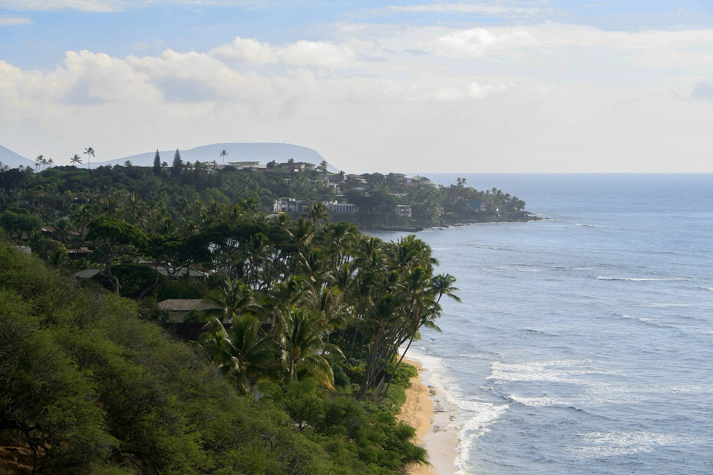

Plan your visit
There is no car park at Ke Iki.
- When
- The fourth Monday of each month.
- Doors
- 4:00 pm. The evening starts at 4:15.
- Ends
- Around 8:30 pm, loosely
- Where
- Beach path off Ke Iki Road,
- From Waikīkī
- About an hour and a quarter via H-1 west and H-2, then Kamehameha Highway.
- Questions
- support@keikisunsetluau.com

What to wear
The sand is soft, so leave the heels.
Dress the part
A sundress or an aloha shirt, and each month has a dress theme — floral in October, all white in November, Mele Kalikimaka in December. Dressing to it is highly encouraged and most of the room does.
Not the shoes
The tables sit directly on deep, soft sand. Heels are not practical — flat sandals or bare feet.
Bring a layer
It is warm at four and cools quickly once the sun is down. Bring a wrap or a light jacket.
Questions
Everything else.
Unfortunately not — every seat is sold in advance and the tables are laid to a count that matches the pig, so we have no way to squeeze anyone in. We do hate turning people away at the path, so please do book ahead.
Not a formal one, no. Returned seats go straight back on sale on the reservations page so it is worth checking back if you have your heart set on a particular month.
There is little, and it does go early. Ke Iki Road is narrow and residential, so please park fully off the tarmac and never across a driveway. If it is full, the public lot at Pupukea is about eight minutes on foot and well worth the walk.
We would really rather you didn't. Ke Iki has one of the heaviest shorebreaks on the island and it lands on a steep sand shelf in very little water, and there is no lifeguard at this end of the beach. Please enjoy it from the dry sand — it is a spectacular thing to watch, and much better watched than swum.
We carry on. Rain on this coast is usually brief, there is a canopy over the tables, and it tends to make for a good evening. If a genuine storm warning lands we move to the following Monday and let you know by midday.
Very. There is a lot of open sand and children usually take to it faster than the adults do. We just ask that everyone stays seated during the fire knife, and that nobody wanders down to the water.
Yes — you book seats rather than a table, so you will be sat alongside other parties.